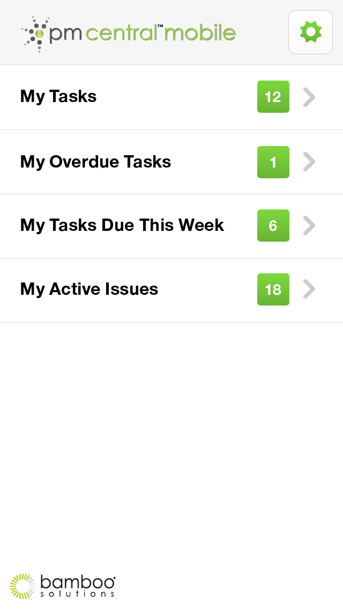

Project Management Central Mobile
Company
Sigma Ukraine
Role
UI/UX Designer
What is PMC Mobile?
Hybrid mobile version of Project Management Central (PMC) application — a signature product in the company’s portfolio of solutions that is used widely to extend the project management-related capabilities of SharePoint.The main challenge was to choose between a native app and a pure HTML 5 Web solution with responsive UI.Initially, it was planned to adapt a PMC site to mobile devices by means of graphical interface. However, after careful pre-study our recommendation was to create a ‘hybrid’ of the mobile and Web solutions. Through a special wrapper a native mobile version of the site was connected with the Web client written in HTML5 and jQueryMobile.
Bamboo Solutions is the leading provider of software solutions for the management of applications, processes, data, and users on the Microsoft SharePoint platform. Bamboo`s portfolio includes more than 70 products ranging from components and applications to solutions and suites that enable organizations to maximize their investment in SharePoint.


